首页>>国家级非物质文化遗产代表性传承人记录工作大事记
国家级非物质文化遗产代表性传承人记录工作大事记
2020年12月—2021年1月
举办2020年度国家级非物质文化遗产代表性传承人记录工作线上培训班。举办“年华易老，技•忆永存——第三届国家级非物质文化遗产代表性传承人记录成果展映月”线上活动。
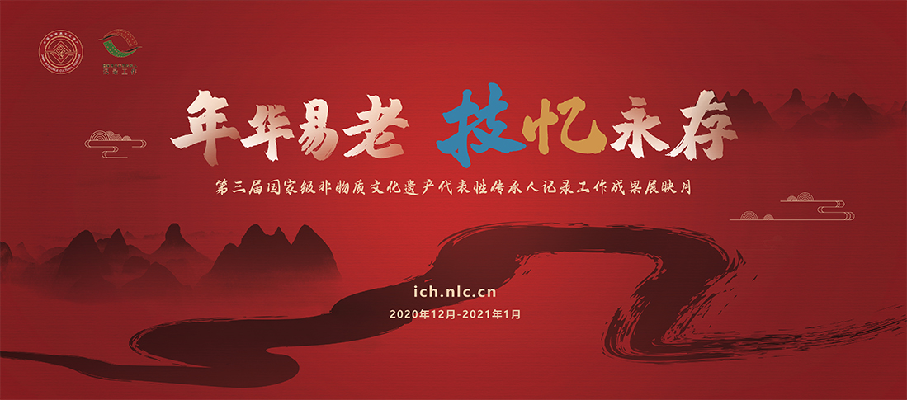
2020年3—9月
完成第三批（2017年支持的）国家级非物质文化遗产代表性传承人记录成果抽复查验收工作。
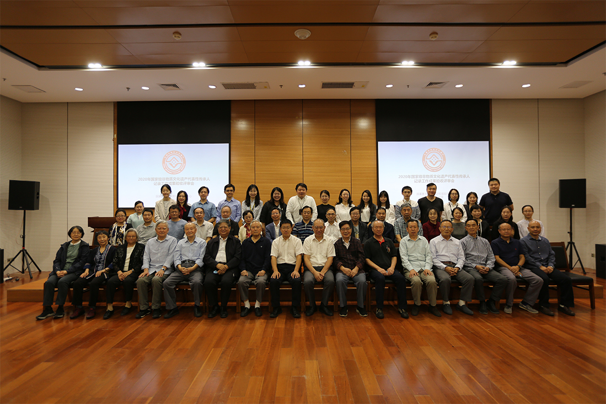
2020年6月
2020文化和自然遗产日特别策划“他们鉴证了文明——非遗影像公开课”（共20讲）录制完成并上线。
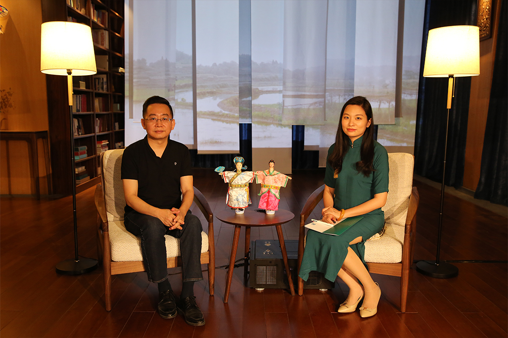
2019年12月
与湖北省非物质文化遗产保护中心、华中师范大学在武汉共同举办面向传承人记录工作项目负责人和执行团队人员的国家级非物质文化遗产代表性传承人记录工作执行团队培训班。
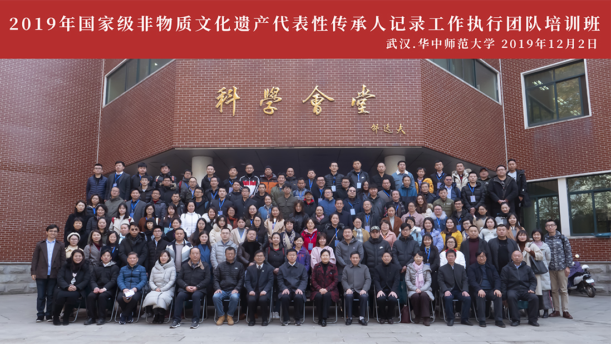
2019年7月
翻译出版《非物质文化遗产的影像记录与呈现——欧洲的经验》，并在“中国——中东欧国家非物质文化遗产保护专家级论坛”期间举办新书首发式。
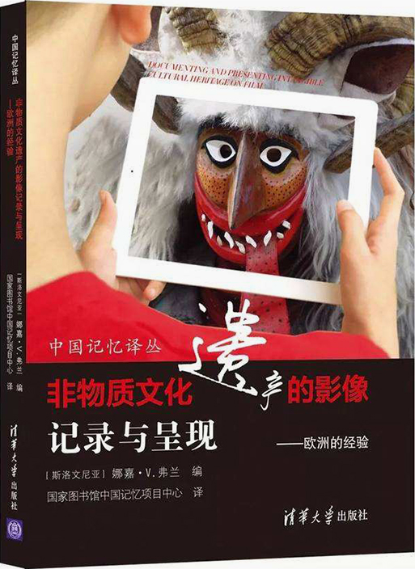
2019年6—7月
举办“年华易老，技•忆永存——第二届国家级非物质文化遗产代表性传承人记录成果展映月”。与文化和旅游部民族民间文艺发展中心共同主办2019年文化和自然遗产日非遗影像展。举办2019年度国家级非物质文化遗产代表性传承人记录工作培训班。
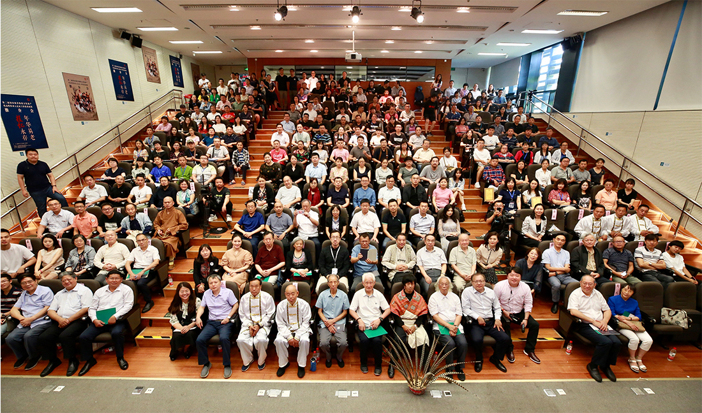
2018年12月—2019年5月
完成第二批（2016年支持的）国家级非物质文化遗产代表性传承人记录成果抽复查验收工作。
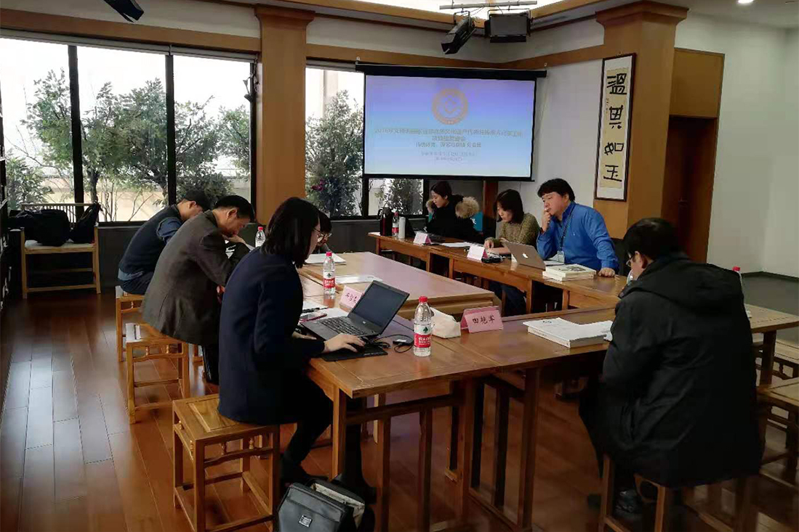
2018年
“国家级非物质文化遗产代表性传承人抢救性记录工作”正式更名为“国家级非物质文化遗产代表性传承人记录工作”。2018年6月至7月，举办“年华易老，技•忆永存——第一届国家级非物质文化遗产代表性传承人记录成果展映月”，优秀成果推介会直播活动累计观看人数60余万人次，举办“和时间赛跑”专题研讨会、“谁在讲述中国故事”等单元活动，同步开展同名主题展览、国图影院公益展映等系列活动，《光明日报》《人民周刊》等30多家重要媒体刊登专版及封面文章对展映月系列活动进行了报道。
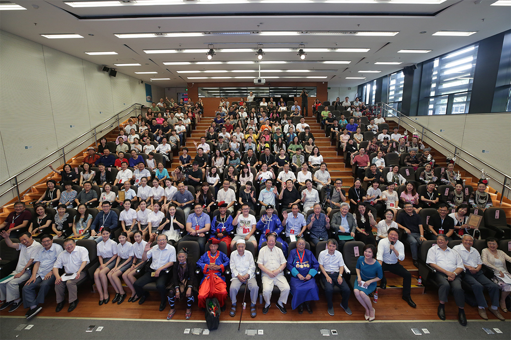
2017年12月—2018年5月
完成第一批（2015年支持的）国家级非物质文化遗产代表性传承人抢救性记录成果抽复查验收工作。
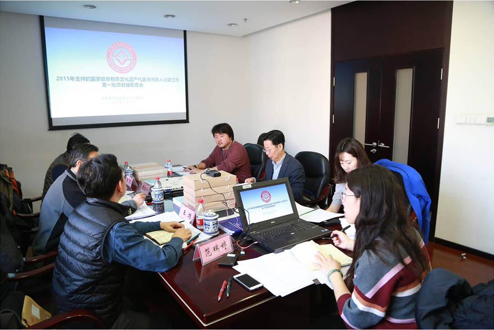
2017年9月
举办国家级非物质文化遗产代表性传承人抢救性记录验收工作培训班，来自全国非遗处、非遗保护中心的工作人员，以及各地相关专家学者共计160余人参加了培训。
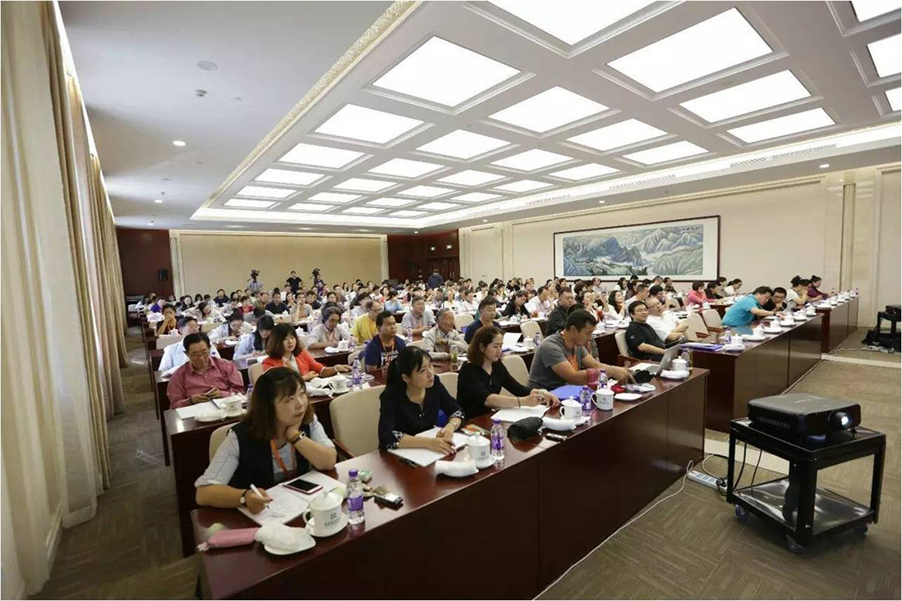
2017年6月
《国家级非物质文化遗产代表性传承人抢救性记录十讲》出版。
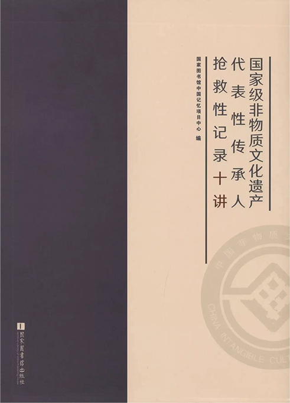
2017年6月5日—2017年6月10日
在国家图书馆艺术中心举办“文化和自然遗产日”纪录片展映活动。
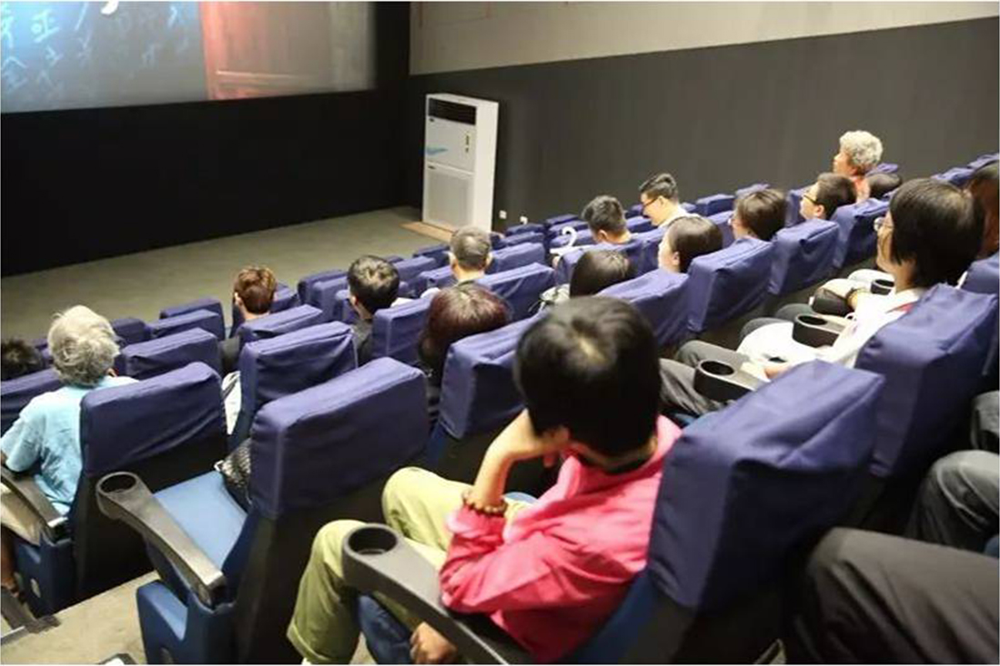
2017年2月
组织开展国家级非物质文化遗产代表性传承人抢救性记录工作中期审片会。
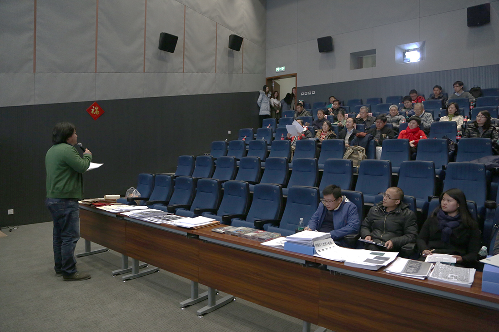
2016年8月
举办国家级非物质文化遗产代表性传承人抢救性记录工作培训班。
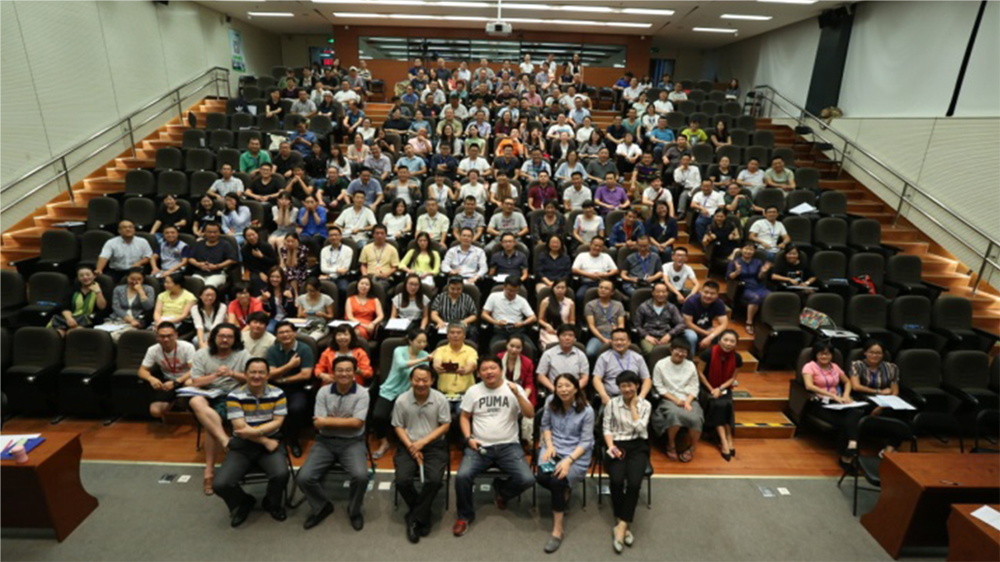
2015年
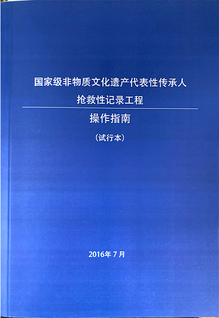
2013年
文化和旅游部开展国家级非物质文化遗产代表性传承人抢救性记录试点工作。
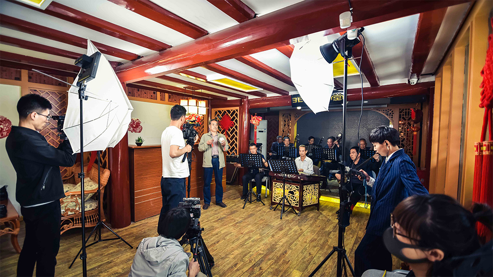